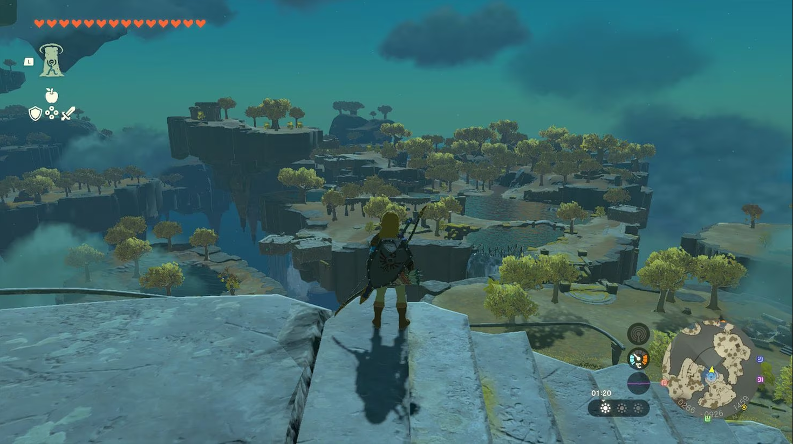

La Gran Nintendo
Super Mario Odyssey
El nuevo mario ya esta a la vuelta de la esquina
"no te lo pierdas".
La trama sigue el patrón clásico de Mario, con Bowser secuestrando a la Princesa Peach. Sin embargo, en esta ocasión, Bowser tiene planes de boda. La historia se desarrolla con emociones y giros inesperados, y los personajes, como Cappy y las Brudley, agregan profundidad y diversión a la narrativa.
Super Mario Odyssey es un hito en la serie Mario que combina la nostalgia de los juegos clásicos con la innovación de la jugabilidad en 3D. Su enfoque en la exploración, las mecánicas únicas y la narrativa cautivadora lo convierten en un título inolvidable para los fanáticos de Mario y los amantes de los videojuegos en general. A medida que el juego continúa cautivando a nuevos jugadores, su legado perdura como uno de los títulos más destacados de la exitosa Nintendo Switch.
Zelda: Tears of the kingdom ¿Merece el g.o.t.y?
Seis años de desarrollo para crear una secuela a la altura de algo como The Legend of Zelda: Breath of the Wild. Tears of the Kingdom no lo tenía fácil. La espera ha sido larga, la información ha llegado en cuentagotas e incluso algunos se permitieron el lujo de dudar de lo que íbamos a tener entre manos cuando algún tráiler no convencía. Pero la realidad es que la nueva entrega de la saga Zelda ya está entre nosotros y es mucho más de lo que podríamos esperar de una secuela de Breath of the Wild. Estamos, simple y llanamente, ante el juego más grande y ambicioso de la historia de Nintendo.
"The Legend of Zelda: Tears of the Kingdom podría haber sido un más y mejor de manual, manteniendo todo aquello que hizo grande a su predecesor, añadiendo algunas novedades y cediendo ante peticiones que se han hecho durante estos años de parte de la comunidad. Y podemos decir que sí, que todo esto se cumple. Pero que también va más allá. Es el qué y el cómo."
A lo largo de las últimas semanas he estado jugando al que sin ninguna duda es el GOTY de 2023. The Legend of Zelda: Tears of the Kingdom es el videojuego que más se merece ostentar semejante título, porque es una auténtica locura lo que ha llegado a desarrollar Nintendo con esta aventura que se pondrá a la venta. The Legend of Zelda: Breath of the Wild logró convertirse por méritos propios en uno de los mejores juegos que se ha desarrollado en toda la historia. Uno del que por muchos años que han ido pasando seguimos hablando de él, los usuarios continúan descubriendo secretos y no para de maravillarnos por el alucinante mundo que nos permitió recorrer.